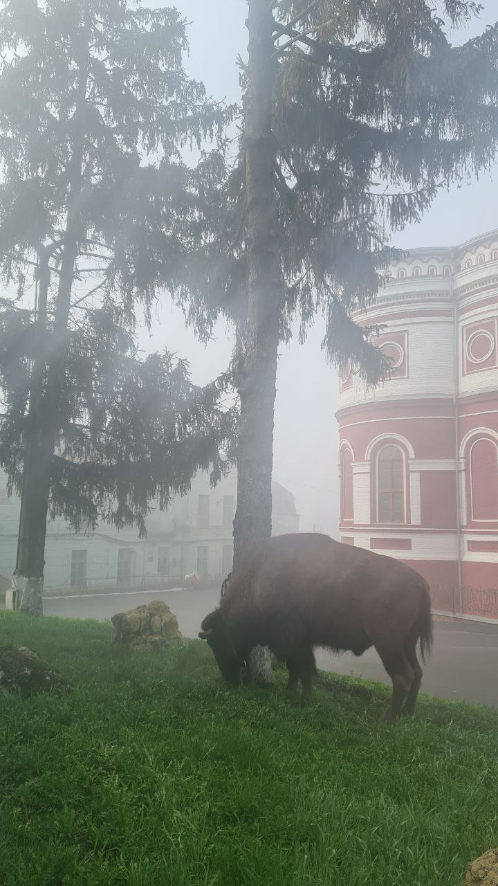

Беглеца в центре города обнаружили рано утром: подключили все службы и (с помощью дозы успокоительного) вернули в зоопарк. Выяснилось, что бизон «сломал забор, освободил также верблюда. Верблюд отказался. И хотел позвать своего товарища, второго бизона, но тот хотел спать. Поэтому он пошёл жевать свежую травку один».
© made by Polina